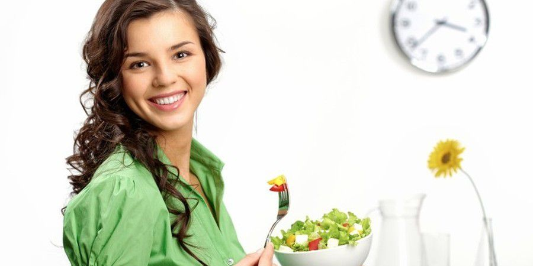
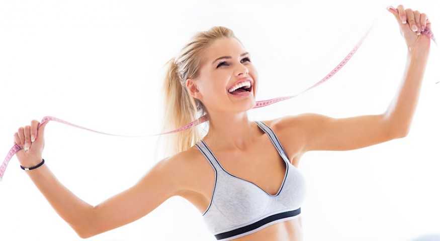
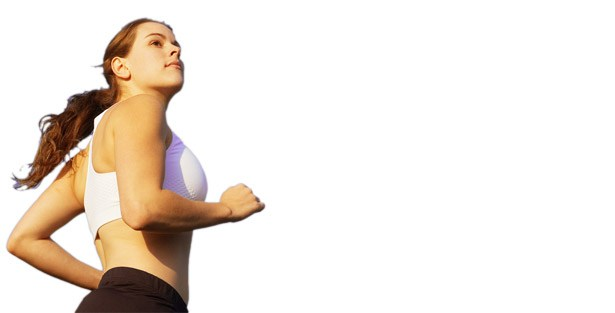
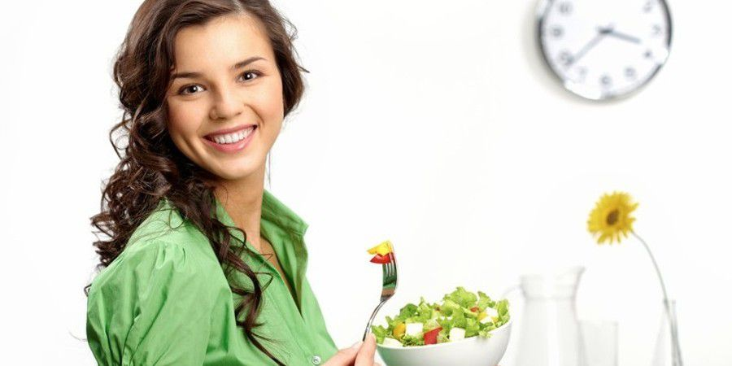
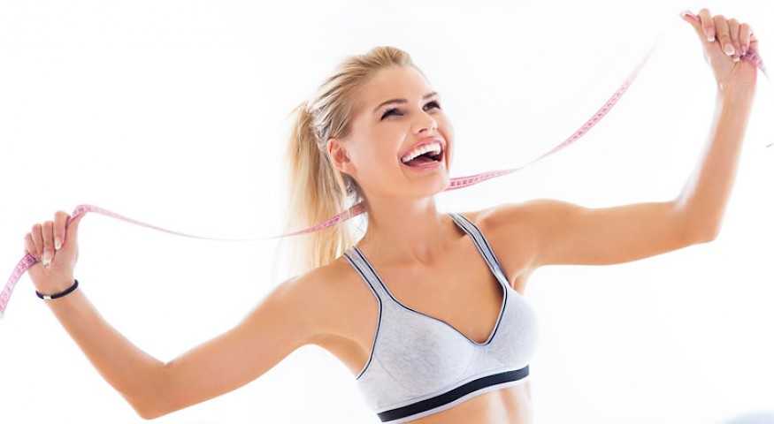
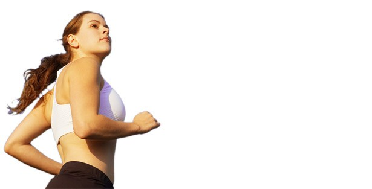

Zona
Zdravlja
DA LI MRSAVLJENJE UVEK USPEVA?
O mršavljenju sam pisala u više članaka, ali nikad iz ugla uspešnosti, kao i u kojim slučajevima mršavljenje ne uspeva. Kada razgovaram sa pacijentima, smatram da je dobro da naglasim šta može da omete njihov put ka željenoj kilaži. Put ka mršavljenju je kao put od kuće do posla ili škole. Ako vam se ne žuri, možete krenuti pešice, ili čak u suprotnom smeru, pa negde okolo i pretrčavati put i stići (ili ne stići) do cilja. Pravo pitanje je da li baš morate toliko da se namučite i svoj organizam stavite u opasnost i ugrozite čak i dostizanje cilja.

Sva “idelana rešenja”, “instant zadovoljstva”, “br.1 za mršavljenje”, “samo 1 kapsula dnevno” su samo marketing poskočice kojima razni proizvođači preparata, pilula, čajeva i kojekakvih dodataka ishrani objašnjavaju tzv. kvalitet njihovih proizvoda. Popularne dijete iz časopisa ili sa interneta su jednako opasni. Da li ste se ikada zapitali zašto ovakvi načini mršavljenja ne uspevaju?
Osećate da vam nešto nedostaje. U popularnim dijetama se u potpunosti lišavate pojedinih vrsta namirnica (ugljenih hidrata, masti ili belančevina) i takve dijete prosto rečeno – nisu praktične. Kada izbacite cele grupe namirnica, stvorićete neravnotežu u ishrani, a posledice mogu biti ozbiljne.
Mršavljenje deluje samo par kilograma, a potom se zaustavlja. Da bi mršavljenje bilo kontinuirano nije dovoljno samo jesti i sedeti. Suština priče o mršavljenju je da je potrebno promeniti režim ishrane ali i obavezno uvesti redovnu fizičku aktivnost. Ako se ne rekreirate i tako ne trošite kalorije, dovešćete u pitanje nastavak mršavljenja. To mogu biti razne aktivnosti poput šetnje, plivanja, džogiranja, igranja košarke, vožnje bicikla i mnogih drugih. Naviknite vaše telo na novi režim ishrane i na rekreaciju i nastavite da mršavite.
Posle inicijalnog gubljenja kilograma, vraćate staru težinu. O ovom tzv. JO-JO efektu je već bilo govora, a poznaju ga sve osobe koje su bile na nekoj popularnoj neuspešnoj dijeti. Uzrok je najčešće neodgovarajući unos kalorija, često ispod svakog minimuma. Ako prebrzo počnete da mršavite na ovaj način, telo će reagovati na najgori način: vratićete kilograme. Ovde nema ni govora o dugoročnim planovima za mršavljenje. Kilograme ćete vratiti i ako ne shvatite da je potrebno da nastavite sa zdravim navikama.

Prestajete sa dijetom jer gubite samopouzdanje i blam vas je da ponovo pokušate. Možda vas je ponela “situacija” i okusili ste nešto što nebi trebalo prema planu ishrane ili ste preterali. Ovo ne znači i da vam je propala dijeta, jer jedan korak nazad ne znači i propadanje. Pravilno se hranite, i zadržite fokus na tome, a povremena “zadovoljstva” u hrani će u manjoj meri otežati dostizanje cilja. Veoma je teško da zadržite cilj pred vama ako upražnjavate restriktivnu dijetu sa interneta ili časopisa, jer ako ste lišeni nečega što volite u potpunosti, veoma je lako da se zaboravite i skrenete sa puta.
Gubite novac u većoj, a kilograme u manjoj meri. Specijalni preparati, kapsule, tablete, čajevi, mešavine, šejkovi i obroci su uglavnom skuplji od lične dijete koju vam može prepisati nutricionista, a nemaju veliki i dugoročni efekat na mršavljenje. Cilj proizvođača preparata je da prodaju što više preparata. Razmislite o tome.
Teško vam je da ne mislite o hrani kada se nađete u društvu, pa se povlačite u sebe i prati vas osećaj izolovanosti. Nedostatak strategije mršavljenja vam je zakucao na vrata. Osećate se nelagodno i zbunjeno. Ako bi svoj fokus usmerili na nešto drugo, na primer na fizičku aktivnost, rešili bi se misli od hrani koje vas proganjaju, a dali bi zamajac bržem i efikasnijem mršavljenju.

Neispunjena obećanja. Čitate novine ili gledate reklamu na TV-u u kojoj neka osoba mršavi 20 kg za tri meseca. Probali ste taj isti preparat, pa iako ste smršali, to na vas nema značajniji efekat. Kao u politici, svi proizvođači preparata obećavaju sve, a kad treba da se realizuju obećanja, rezultati izostanu. Lepo je naš narod rekao “Bez muke nema nauke”. Mršavljenje je proces koji zahteva mnogo više od gutanja pilula ili čajeva, ne zalećite se. Lepo je čuti da možete jesti sve što poželite pa uz “samo jednu tabletu dnevno” ipak mršavite. To se ipak nerealno, a zakone matematike ne možete pobediti: da bi sagoreli jedan kilogram telesne masti, morate potrošiti 7700 kcal.
Budite realni u svojim ciljevima i znajte da možete smršati na prirodan, zdrav način samo ako promenite rđave navike u ishrani i uvedete fizičku aktivnost. Nutricionista je tu za vas i sa vama.
O mršavljenju sam pisala u više članaka, ali nikad iz ugla uspešnosti, kao i u kojim slučajevima mršavljenje ne uspeva. Kada razgovaram sa pacijentima, smatram da je dobro da naglasim šta može da omete njihov put ka željenoj kilaži. Put ka mršavljenju je kao put od kuće do posla ili škole. Ako vam se ne žuri, možete krenuti pešice, ili čak u suprotnom smeru, pa negde okolo i pretrčavati put i stići (ili ne stići) do cilja. Pravo pitanje je da li baš morate toliko da se namučite i svoj organizam stavite u opasnost i ugrozite čak i dostizanje cilja.

Sva “idelana rešenja”, “instant zadovoljstva”, “br.1 za mršavljenje”, “samo 1 kapsula dnevno” su samo marketing poskočice kojima razni proizvođači preparata, pilula, čajeva i kojekakvih dodataka ishrani objašnjavaju tzv. kvalitet njihovih proizvoda. Popularne dijete iz časopisa ili sa interneta su jednako opasni. Da li ste se ikada zapitali zašto ovakvi načini mršavljenja ne uspevaju?
Osećate da vam nešto nedostaje. U popularnim dijetama se u potpunosti lišavate pojedinih vrsta namirnica (ugljenih hidrata, masti ili belančevina) i takve dijete prosto rečeno – nisu praktične. Kada izbacite cele grupe namirnica, stvorićete neravnotežu u ishrani, a posledice mogu biti ozbiljne.
Mršavljenje deluje samo par kilograma, a potom se zaustavlja. Da bi mršavljenje bilo kontinuirano nije dovoljno samo jesti i sedeti. Suština priče o mršavljenju je da je potrebno promeniti režim ishrane ali i obavezno uvesti redovnu fizičku aktivnost. Ako se ne rekreirate i tako ne trošite kalorije, dovešćete u pitanje nastavak mršavljenja. To mogu biti razne aktivnosti poput šetnje, plivanja, džogiranja, igranja košarke, vožnje bicikla i mnogih drugih. Naviknite vaše telo na novi režim ishrane i na rekreaciju i nastavite da mršavite.
Posle inicijalnog gubljenja kilograma, vraćate staru težinu. O ovom tzv. JO-JO efektu je već bilo govora, a poznaju ga sve osobe koje su bile na nekoj popularnoj neuspešnoj dijeti. Uzrok je najčešće neodgovarajući unos kalorija, često ispod svakog minimuma. Ako prebrzo počnete da mršavite na ovaj način, telo će reagovati na najgori način: vratićete kilograme. Ovde nema ni govora o dugoročnim planovima za mršavljenje. Kilograme ćete vratiti i ako ne shvatite da je potrebno da nastavite sa zdravim navikama.

Prestajete sa dijetom jer gubite samopouzdanje i blam vas je da ponovo pokušate. Možda vas je ponela “situacija” i okusili ste nešto što nebi trebalo prema planu ishrane ili ste preterali. Ovo ne znači i da vam je propala dijeta, jer jedan korak nazad ne znači i propadanje. Pravilno se hranite, i zadržite fokus na tome, a povremena “zadovoljstva” u hrani će u manjoj meri otežati dostizanje cilja. Veoma je teško da zadržite cilj pred vama ako upražnjavate restriktivnu dijetu sa interneta ili časopisa, jer ako ste lišeni nečega što volite u potpunosti, veoma je lako da se zaboravite i skrenete sa puta.
Gubite novac u većoj, a kilograme u manjoj meri. Specijalni preparati, kapsule, tablete, čajevi, mešavine, šejkovi i obroci su uglavnom skuplji od lične dijete koju vam može prepisati nutricionista, a nemaju veliki i dugoročni efekat na mršavljenje. Cilj proizvođača preparata je da prodaju što više preparata. Razmislite o tome.
Teško vam je da ne mislite o hrani kada se nađete u društvu, pa se povlačite u sebe i prati vas osećaj izolovanosti. Nedostatak strategije mršavljenja vam je zakucao na vrata. Osećate se nelagodno i zbunjeno. Ako bi svoj fokus usmerili na nešto drugo, na primer na fizičku aktivnost, rešili bi se misli od hrani koje vas proganjaju, a dali bi zamajac bržem i efikasnijem mršavljenju.

Neispunjena obećanja. Čitate novine ili gledate reklamu na TV-u u kojoj neka osoba mršavi 20 kg za tri meseca. Probali ste taj isti preparat, pa iako ste smršali, to na vas nema značajniji efekat. Kao u politici, svi proizvođači preparata obećavaju sve, a kad treba da se realizuju obećanja, rezultati izostanu. Lepo je naš narod rekao “Bez muke nema nauke”. Mršavljenje je proces koji zahteva mnogo više od gutanja pilula ili čajeva, ne zalećite se. Lepo je čuti da možete jesti sve što poželite pa uz “samo jednu tabletu dnevno” ipak mršavite. To se ipak nerealno, a zakone matematike ne možete pobediti: da bi sagoreli jedan kilogram telesne masti, morate potrošiti 7700 kcal.
Budite realni u svojim ciljevima i znajte da možete smršati na prirodan, zdrav način samo ako promenite rđave navike u ishrani i uvedete fizičku aktivnost. Nutricionista je tu za vas i sa vama.